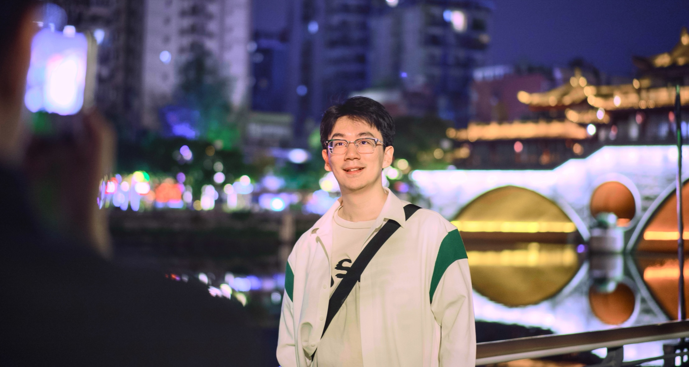

Chengqi Duan
PhD Candidate at The University of Hong Kong
I am currently a second-year PhD Candidate in the Institute of Data Science at The University of Hong Kong, supervised by Prof. Xihui Liu and Prof. Yi Ma. Prior to joining HKU, I received my Bachelor's degree in Department of Computer Science and Technology from Tsinghua University in 2024, where I was fortunate to work closely with Prof. Hang Su and Prof. Jun Zhu.
My research interests primarily lie in Unified Models, AI Agents and Reinforcement Learning.

Recent News
- May 2026 🏆 Highly honored that our paper CodePlot-CoT received the Best Paper Award at the 2nd Workshop on Knowledge-Intensive Multimodal Reasoning (KIMR), CVPR 2026!
- Apr 2026 1 findings paper is accepted to ACL 2026!
- Feb 2026 1 main paper and 1 findings paper are accepted to CVPR 2026!
- Jan 2026 2 papers are accepted to ICLR 2026!
- Sep 2025 1 paper is accepted to NeurIPS 2025!
- Jun 2025 1 paper is accepted to ICCV 2025!
- Sep 2024 Started my PhD journey at the Institute of Data Science, The University of Hong Kong! Honored to receive the HKU Presidential PhD Scholarship and Hong Kong PhD Fellowship Scheme.
- Jul 2024 Graduated with a Bachelor of Computer Science from Tsinghua University.
Education

The University of Hong Kong (HKU)
Sep 2024 - PresentPhD in Institute of Data Science
Supervised by Prof. Xihui Liu and Prof. Yi Ma.
Hong Kong
Tsinghua University
Sep 2020 - Jul 2024Bachelor of Computer Science
Worked closely with Prof. Hang Su and Prof. Jun Zhu.
- GPA: 3.75/4.0
Beijing, China
Selected Publications (* denotes equal contribution)
Citation counts are given by Semantic Scholar.
GoT-R1: Unleashing Reasoning Capability of MLLM for Visual Generation with Reinforcement Learning
, Rongyao Fang*, Yuqing Wang*, Kun Wang, Linjiang Huang, Xingyu Zeng, Hongsheng Li, Xihui Liu.
CodePlot-CoT: Mathematical Visual Reasoning by Thinking with Code-Driven Images
, Kaiyue Sun*, Rongyao Fang*, Manyuan Zhang, Yan Feng, Ying Luo, Yufang Liu, Ke Wang, Peng Pei, Xunliang Cai, Hongsheng Li, Yi Ma, Xihui Liu.
T2I-CompBench++: An Enhanced and Comprehensive Benchmark for Compositional Text-to-image Generation
Kaiyi Huang, , Kaiyue Sun, Enze Xie, Zhenguo Li, and Xihui Liu.
Got: Unleashing reasoning capability of multimodal large language model for visual generation and editing
Rongyao Fang*, , Kun Wang, Linjiang Huang, Hao Li, Hao Tian, Shilin Yan, Weihao Yu, Xingyu Zeng, Jifeng Dai, Xihui Liu, Hongsheng Li.
FLUX-Reason-6M & PRISM-Bench: A Million-Scale Text-to-Image Reasoning Dataset and Comprehensive Benchmark
Rongyao Fang*, Aldrich Yu*, , Linjiang Huang, Shuai Bai, Yuxuan Cai, Kun Wang, Si Liu, Xihui Liu, Hongsheng Li.
PUMA: Empowering Unified MLLM with Multi-granular Visual Generation
Rongyao Fang*, , Kun Wang, Hao Li, Hao Tian, Xingyu Zeng, Rui Zhao, Jifeng Dai, Hongsheng Li, Xihui Liu.
T2I-ReasonBench: Benchmarking Reasoning-Informed Text-to-Image Generation
Kaiyue Sun, Rongyao Fang, , Xian Liu, Xihui Liu.
Robust Classification via Single Diffusion Model
Huanran Chen, Yinpeng Dong, Zhengyi Wang, Xiao Yang, , Hang Su, Jun Zhu.
Internship Experience
Tencent (腾讯) - Qingyun Program (青云计划)
Jul 2026 - PresentResearch Intern
Meituan (美团)
Jun 2025 - Jun 2026Research Intern
SenseTime (商汤科技)
Sep 2024 - Jun 2025Research Intern
Honors & Awards
-
Best Paper Award | 2nd Workshop on KIMR, CVPR
2026
-
HKU Presidential PhD Scholarship (HKUPS)
2024
-
Hong Kong PhD Fellowship Scheme (HKPFS)
2024
-
Sports Scholarship, Tsinghua University
2023
-
3rd Place in Artificial Intelligence Security Competition
2022
-
1st Prize in National Olympiad in Informatics in Provinces (NOIP)
Beijing, 2018
-
2nd Prize in National Olympiad in Informatics in Provinces (NOIP)
Beijing, 2017